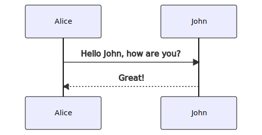
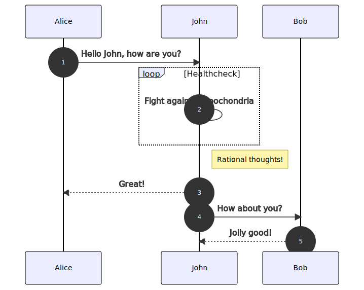

Edit made on new os.
todo - make the key:value thing in parts be section parts to
filenames, e.g. for abstract, progress, etc?
Heading level 1 (should become 2) in
content/a_outerfolder/main.md
Content below that heading in the markdown file
xxx change
let’s see if this mermaid filter works. Should look like the
example from https://github.com/raghur/mermaid-filter

Now let’s try another, this one from here:
https://stackoverflow.com/questions/68561397/mermaid-syntax-error-on-trying-render-a-diagram-on-github-md-file

This is a link
to demo doc 2, clicking this link should open the file, which should
be copied to the output folder.
Heading level 1 (should become 2) in
content/b_outerfolder/main.md
Content below that heading in the markdown file. A nested list test
follows.
- This is one element
- Another
- And a nested element
- with a nested dot
- another
- More element
- Outer end of list
Note that there are two more subfolders here, however they are not
referenced in this markdown file, and hence are not integrated into the
final document.
This is a link
to demo doc 3, clicking this link should open the file, which should
be copied to the output folder.
This is a link
to a demo doc with spaces in the dir and file name, clicking this
link should open the file, which should be copied to the output
folder.


{kind=link}